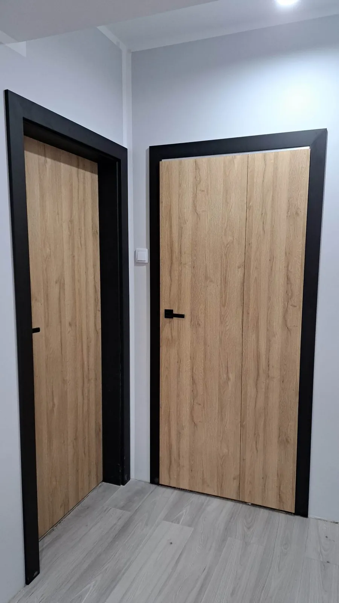
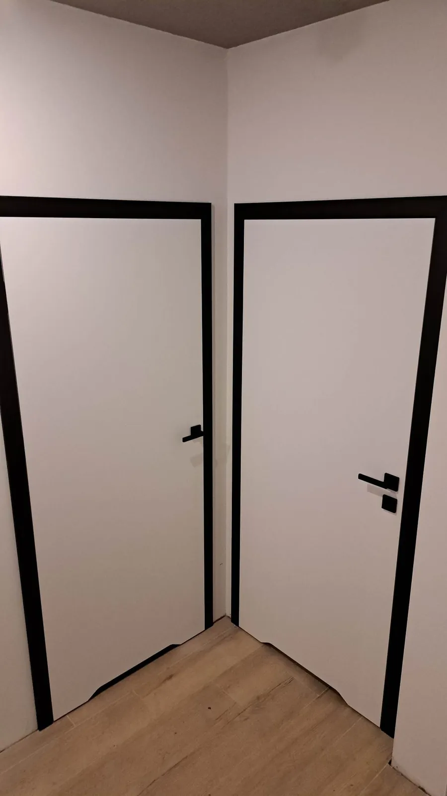
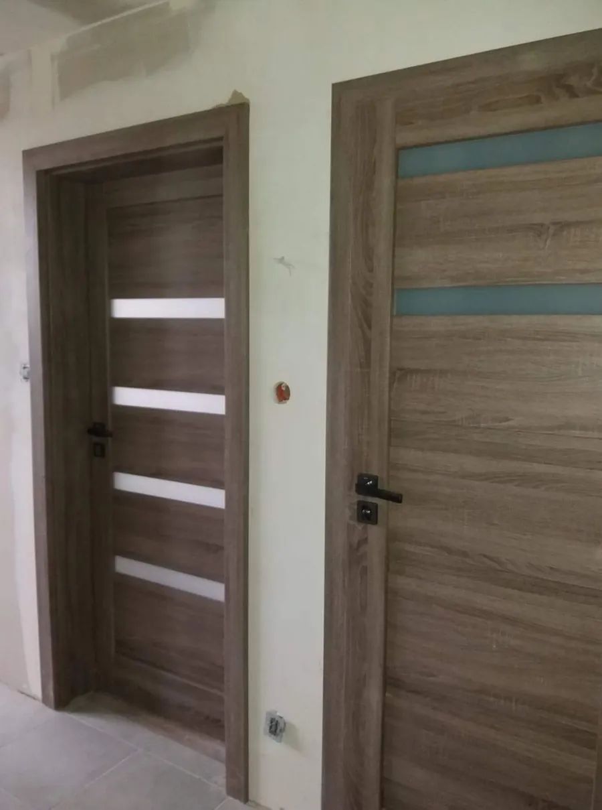
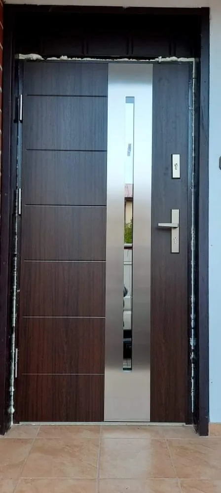
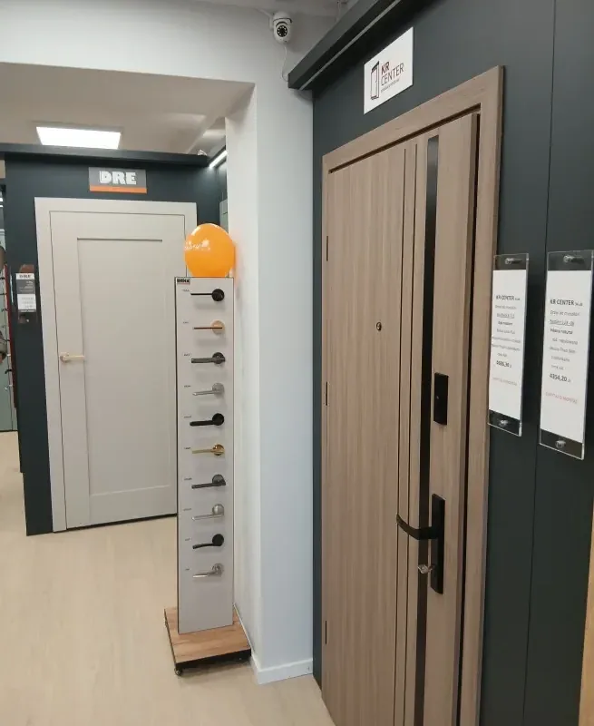
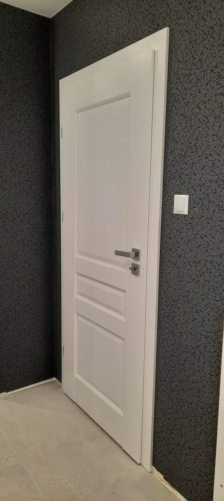
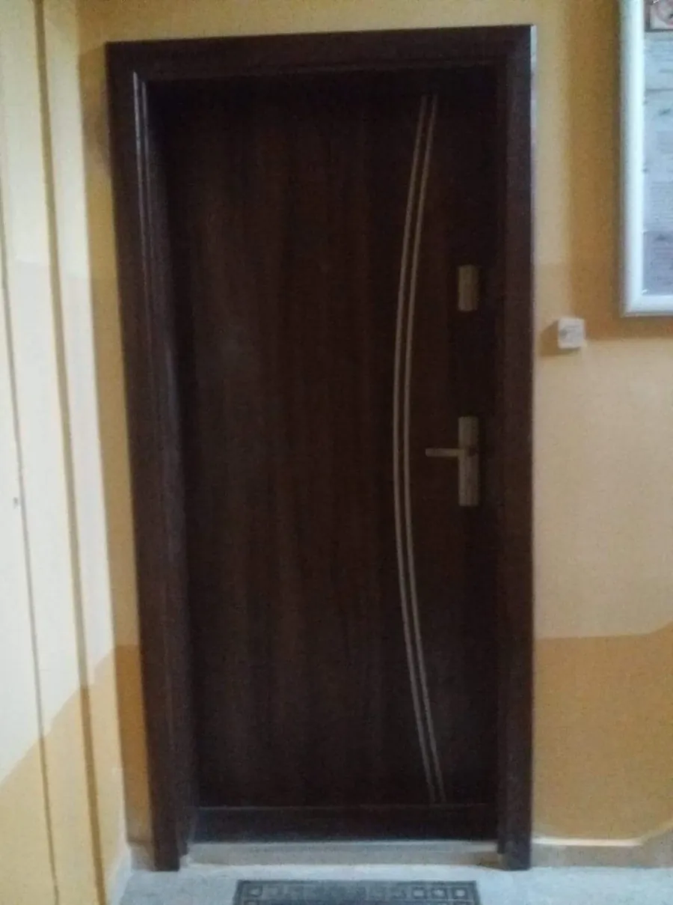
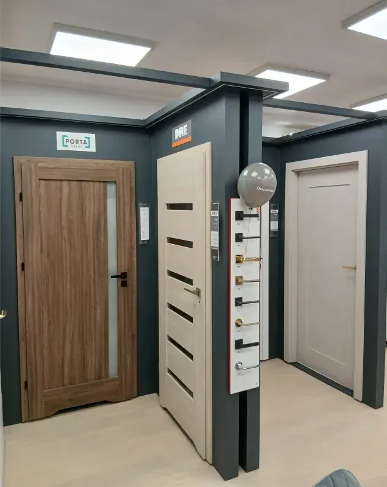
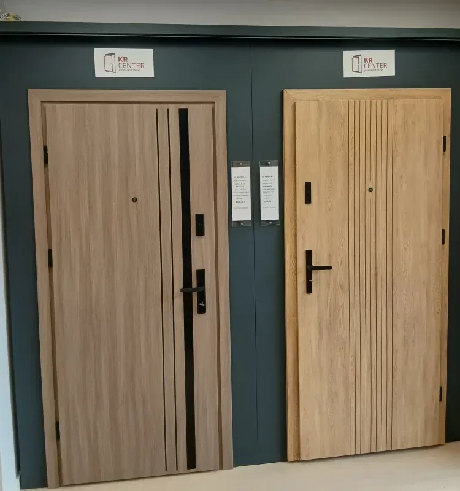

Montaż drzwi w Głogowie – realizacje i salon
19 montaży drzwi z Głogowa i okolic, sfotografowanych telefonem na budowie i w mieszkaniach klientów, oraz 19 zdjęć ekspozycji w salonie.

Po montażuDrzwi w jasnym dębie z czarnymi ościeżnicami


















Chcesz takie drzwi u siebie?
Przyjdź do salonu albo zadzwoń – zaczniemy od pomiaru.